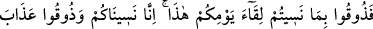
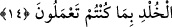

Hasan Basrî (r.h.)’tan rivâyet edildiğine göre şöyle demiştir: “Ebû Hüreyre (r.a.)
Rasûlullah (s.a.)’in minberi üzerine çıktı ve bizlere hitap ederek şöyle dedi: Rasûlullah
(s.a.)’i şöyle derken işittim: “Muhakkak ki Allah Teâlâ, Âdem (a.s.)’a şu üç konuda
(âdetâ) mazeret beyan edip şöyle buyurur: “Ey Âdem! Şâyet ben yalancılara lânet
etmemiş, yalan ve vaadinden dönmeye buğzetmemiş ve onlardan dolayı azap edecek
olmasaydım, bugün senin evlâdlarının hepsine rahmetimle muâmele eder, onlar için
hazırlanmış şiddetli azabı kendilerinden kaldırırdım. “Cehennemi hem cinlerden hem
insanlardan bir kısmıyla dolduracağım” diye benden kesin söz çıkmıştır. Ey Âdem!
Şunu bilmiş ol ki, senin evlâdından eğer dünyâya geri gönderecek olsam bulunduğu
halden daha kötüsüne döneceğini (ezelî) ilmimle bildiğim kimseden başkasını
cehenneme koymam ve cehennem ile azâb etmem. Hiç kimse geri dönmez ve
azarlandıktan sonra hoşnut edilmez.”
Allah Teâlâ devamla şöyle buyurur: “Ey Âdem! Seni, benimle zürriyetin arasında
hakem kıldım. Şimdi kalk, amellerin tartıldığı terazinin başına geç. Onların
amellerinden sana gelenlere bak. Kimin hayrı şerrinden zerre miktar ağır gelirse,
ona cennet vardır. Tâ ki böylece benim ancak zâlim olan kimseyi cehenneme
koyduğumu bilesin.”[142]
Bilesin ki Allah Teâlâ, cehennemi güçlülerle, cenneti de zayıflarla dolduracaktır.
Bunun delili Enes b. Mâlik (r.a.)’ın rivâyet ettiği şu hadîstir: “Cehennem dolunca,
cennet şöyle der: (Yâ Rabbi!) Zorbalarla, Firavunlarla ve krallarla cehennem doldu
ve fakat zayıf kulların beni henüz dolduramadı. Bunun üzerine Hak Teâlâ yeni
varlıklar yaratır ve onları cennete koyar. Ölümü tatmayan ve gözleriyle hiçbir
kötülük görmeyen bu varlıklara ne mutlu!”[143]
Ebû Hüreyre (r.a.)’dan rivâyet edilen bir hadiste Rasûlullah (s.a.) şöyle
buyurmuştur: “Cennet ile cehennem münakaşa ettiler ve karşılıklı deliller getirerek
birbirine üstün gelmeye çalıştılar. Cehennem: “Bende zorbalar ve kibirliler var.”
dedi. Cennet: “Bende de zayıflar ve yoksullar var.” dedi. Bunun üzerine Allah Teâlâ
cennete şöyle buyurur: “Sen benim rahmetimsin, dilediğime seninle merhamet
ederim.” Cehenneme de şöyle buyurur: “Sen de benim azâbımsın. Dilediğime seninle
azâb ederim. Ben her ikinizi de dolduracağım.”[144]
Bu rivâyet, Bahru’l-ulûm’da böyle geçmektedir.
14. (O gün onlara şöyle diyeceğiz:) Bu güne kavuşmayı unutmanızın karşılığında
(azabı) şimdi tadın bakalım! Doğrusu biz de sizi unuttuk; yaptıklarınızdan ötürü